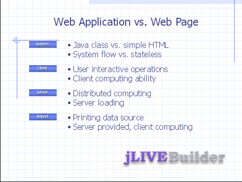

|
2.2 網際網路應用程式與單純網頁 (Internet application vs. web page)網際網路的企業應用程式與網頁是不盡相同的，一般企業有商品或公司服務簡介，這些可以以網頁方式呈現，但是應用系統例如： ERP 、 SCM 、 CRM 等等，甚至更簡單的人事薪資、庫存管理，都必須有完整的開發與維護的方案，才能整合企業所需的應用系統 (Enterprise Application Integration) 。本章節將比較 jLIVE Builder™ 所開發的應用程式 (web application) 與單純網頁 (web page) 之不同與架構企業應用整合 (EAI) 時應用程式 (web application) 的必要性。  Java™ class vs. simple HTML jLIVE Builder™ 所開發的應用系統 (internet application) 是以跨平台的 Java™ class 在運作，而網頁 (web page) 則以 HTML 在瀏覽器 (browser) 以超連結 (hyperlink) 瀏覽網頁，在客戶端 (client) 的機制與伺服器 (server) 的架構是不完全相同的。以 Java™ class 在客戶端的瀏覽器內參與 (plug in) 系統運作 ，網際網路應用程式在瀏覽器中的操作就不只是單純的瀏覽作業而已，而是像視窗應用程式般有完整的程式流程與功能。 System flow vs. stateless jLIVE Builder™ 是運用於開發網際網路應用程式系統，一個應用系統必須要有使用的流程與商業邏輯，網頁是沒有狀態和流程性的。使用者在應用程式中操作資料時不能像一般網頁作業，不斷的換頁再換頁。輸入一組資料，驗證數種檢核後已經換了數個網頁，使用者完全無法掌握當錯誤發生時，是往下頁或回前頁繼續操作。沒有流程性的單純網頁，無法符合應用系統的需求應是無庸置疑的。 User interactive operation 由於 jLIVE
Builder™
以 Java™ class
在客戶端的瀏覽器內運作，所以系統不但能控管所有使用者操作流程，對於使用者端的任何操作需求皆可即時回應。簡單的輸入資料檢核驗證，在客戶端
(client)
即可作業 Distributed computing jLIVE Builder™ 運用 Java™ Applet 、 Swing set 與 class loader 的軟體元件技術 (component architecture) ，在網際網路應用程式的開發、執行與維護，不但能達到以上的需求，在整體系統的運算負載 (computing loading) 中，亦達到所謂的分散式運算 (distributed computing) ，即是系統將使用者的操作需求，分別由客戶端 (client) 、中間層 (middle tier) 及伺服器端 (server) 按最有效率的方式分配擔任運算角色。屬於客戶端 (client) 輸入、操作、檢核、流程、控制由客戶端自行負責，中間層 (middle tier) 負責客戶端登入權限、資料庫連結、結果資料流的存取及系統資源服務等等，資料庫伺服器端 (server) 負責統計、儲存、更新資料及執行資料庫的各種程序。 Printable data, server provided, client computing jLIVE Builder™ 報表系統亦使用分散式的系統原則，客戶端 (client) 負責資料運算 (data aggregate) 、統計圖表製作 (statistic chart plot) 、列印格式配置 (format layout) ，伺服器端 (server) 只按客戶端 (client) 目前列印需求，提供查詢結果集 (query result set) 的資料。
Copyright © 2001~ 2004 Probe Technology . All Rights Reserved. Questions, comments, and suggestions to Service@probe.com.tw |